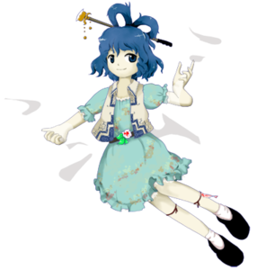
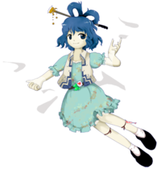

- Welcome to Touhou Wiki!
- Please register to edit. For assistance, check in with our Discord server or IRC channel.
Seiga Kaku
Seiga Kaku kakɯ seːga (♫) | |
|---|---|
|
 Seiga Kaku in Ten Desires The Wicked Hermit Who Passes Through WallsMore Character Titles | |
| Nickname |
Seiga Nyan Nyan ( |
| Species | |
| Abilities |
Passing through walls |
| Age |
More than 1400 years old, likely older than her colleagues. |
| Location | |
Music Themes | |
| |
Appearances | |
| Official Games | |
| |
| Print Works | |
| |
Seiga Kaku (霍 青娥 Kaku Seiga) is a "wicked" hermit and the superior of Yoshika Miyako. She plays a major role in Ten Desires as the 4th Stage Boss and for being the one who taught Taoism to Toyosatomimi no Miko.
General Information[edit]
Personality[edit]
Seiga is a rather prideful girl who thinks Taoism is superior to other religions and tries to get people to convert. She acts to further her own goals, and nothing more, which is why she is labeled a wicked hermit and not accepted by the heavens. She doesn't seem to care about anyone, instead manipulating them for her own ends. Her revival of Yoshika's corpse shows her lack of regard for human rights. She doesn't appear interested in material possessions at all, despite her ability to pass through walls. However, in Symposium of Post-mysticism, she does take on a role of reverse-Santa Claus and steals people's belongings to sell back to whoever they bought it from.
She dislikes Byakuren Hijiri and eagerly waits Toyosatomimi no Miko's revival. She is, however, very fond and proud of Yoshika Miyako and treats her more as a pet than a normal servant. She is someone who follows those she likes, but feels no particularly obligation to such people, making her alliance with Miko less assured than the other Taoists.
Ability[edit]
- Ability to pass through walls
Seiga's ability doesn't function by making her intangible; instead she uses her hairpin to physically cut holes in walls, which disappear after a while. Walls don't need to be vertical, and she can use her ability on the ground to create tunnels. Walls made of soft materials appear to be more difficult for her to pass through than hard ones. She also appears to be able to use her ability on liquid walls, though the one known instance of this was a special case where the wall of water was layered, extremely powerful, and closed the holes she made almost instantly. She once opened a hole in the Hakurei Shrine's wall[2], and in Impossible Spell Card she is able of teleporting by passing through the "screen walls", in the same way Seija can do by using the Gap Folding Umbrella (Although this is a "forced" demonstration of this ability, that wouldn't be possible outside of gameplay mechanics).
This ability might refer to the magical plow which can pass through any obstacle in the original "Qing'e" story. In the story, the plow was given to Huo Huan by a passing Taoist, and Huo Huan proceeded to use the plow to open a wall in Qing'e's chamber so he could have a good look at her, which eventually led to their marriage. When Qing'e became a hermit, Huo Huan used the plow again to bring her back when Qing'e's father tried to lock him out of their mountain retreat.
Another reference exists in volume 1, chapter 15, "Taoist Climbing Mountain in Vain" (simplified:劳山道士, traditional:勞山道士), where Wang (王) temporarily gains the ability to pass through walls, although the main theme of it's however his inadequacy for becoming a hermit due to lack of patience.
Backstory[edit]
It isn't stated where exactly Seiga comes from, but as she lived in the mountains early in her life and then "crossed the sea" to meet Toyosatomimi no Miko and has a jiang-shi familiar, it can be assumed that she lived in China. After Seiga's father became engrossed with Taoism and left their family to become a hermit, Seiga realized her own passion for Taoism.
Eventually, she was able to marry into the Kaku family. She had the freedom to do as she pleased, but this didn't include Taoism, and she ended up spending eight years depressed and not willing to speak with anyone. At the end of the eight years, Seiga abruptly bid her new family farewell and faked her own death by using Taoist arts to disguise a bamboo shoot as her body. Her family found and buried this "body", while Seiga was finally free to become a hermit like her father before her.
She refined her Taoist beliefs and techniques for many years, though apparently many of the things she did toward this end were somewhat taboo, including gaining an unaging body, and she ended up being feared by the common people. Heaven also did not acknowledge her, thus giving her the title of a "wicked hermit" – her willingness to trick her family and fake her own death without any remorse points towards a personality that higher beings didn't consider to be a good thing.
Though her Taoist technique was strong, hermits such as herself weren't overly rare in the land she lived in. She wished to spread Taoism to many people, though, so she decided to move to Japan, which didn't have quite as many hermits living there.
She arrived in Japan as beliefs in Buddhism and Shinto were deadlocked with each other. Seizing the opportunity, she convinced Toyosatomimi no Miko, a well-known "virtuous person" considered by some to be a saint, to come to the side of Taoism. Their goal was to use it to achieve immortality, and their plan was to spread the ways of Buddhism throughout the country. Seiga had no real desire to use her powers for the good of the rest of the nation, however.
Details on Seiga's own move to Gensokyo are non-existent, but after she did, she revived an ancient Japanese author as a Jiang Shi, as she had found the mausoleum where Miko, Mononobe no Futo, and Soga no Tojiko were buried and wanted to protect it.
Character Design[edit]
Name[edit]
Her full name is Seiga Kaku (霍 青娥). Her nickname is Seiga Nyan Nyan (青娥 娘々, lit. "Lady Seiga"). Kaku (霍) is a genuine if uncommon Chinese surname pronounced "Huo" in Mandarin Chinese. Likewise, her given name Seiga (青娥), is pronounced "Qing'e" in Mandarin Chinese and literally means "Blue/Green/Youth Beauty". The Nyan Nyan (娘々) part of her nickname is an approximation of "Niang Niang", which is an archaic word for referring to an empress, a consort, or a goddess.
Qing'e (青娥) is the name of a tale, on the 14th chapter of the 7th volume in the Chinese ghost story collection Strange Stories from a Chinese Studio (simplified: 聊斋志异, traditional: 聊齋志異), in which the eponymous heroine, surname Wu (武), follows her father's footsteps to seek Dao but falls in love with a Huo Huan (霍桓) and marries him. She is presumed dead later in the story, but her husband finds out that she became a hermit with her father and seeks her return.
By present-day Japanese naming schema, a lady normally renames her family name that of her husband on the family register. But Chinese couples don't do it; they have different surname even after marriage. So when we identify Seiga as the Qing'e, Seiga's actual name shouldn't be Huo Qing'e (霍青娥), but probably Wu Qing'e (武青娥), or Huowu Qing'e (霍武青娥) in dual-surname system (冠姓).
Design[edit]
In Ten Desires's official art, she has blue eyes and hair of the same color styled with two Chinese style hair loops secured with a relatively large hair stick. She wears a simple teal dress with a floral design with a white and blue vest with Chinese patterns. On her waist is a flower secured by her belt. On her left leg is a talisman likely for Yoshika-related reasons. She sits on a flowing, translucent white cloth.
Story[edit]
Games[edit]
| Attention: This section is a stub and it needs expanding with more information related to the section's topic. If you can add to it in any way, please do so. |
- Ten Desires
- Hopeless Masquerade
Seiga appeared in Hopeless Masquerade as a background cameo on the Divine Spirit Mausoleum stage. She can be seen waving.
- Impossible Spell Card
Presumably from hearing or seeing a wanted sign about the mischief-making amanojaku Seija Kijin, Seiga appears to be one of the many humans and youkai that tries to capture her. She uses spell cards that are considered impossible to dodge. Not only did she try to capture Seija herself, she was also controlling Yoshika Miyako on one spell card.
Literature[edit]
- Wild and Horned Hermit
Seiga makes an appearance in Chapter 12 of Wild and Horned Hermit. After Komachi Onozuka explains that humans who exceed their lifespan are set upon by "something scarier than a shinigami" to carry them to their deaths, Seiga – who has recently come above ground – is encased in an extremely tall tower of gushing water, presumably in an effort to kill the wicked hermit. The kappa that live there don't have the power to do anything about it, and despite Seiga's ability to phase through walls using her hair stick, she cannot manage to break through the multiple layers of water surrounding her. Instead, using the ground as a "wall", she essentially digs her way out and ends up at the Hakurei Shrine.
Relationships[edit]
| Attention: This section is a stub and it needs expanding with more information related to the section's topic. If you can add to it in any way, please do so. |
Yoshika Miyako[edit]
She is the superior of Yoshika Miyako who is a guard of Hall of Dreams' Great Mausoleum. Seiga is very fond of Yoshika, often calling her "my cute underling". The charm on her forehead apparently contains a to-do list, written by Seiga. As Yoshika says "we" were revived to protect the Hall of Dreams' Great Mausoleum, there may be more Jiang Shi guards under the control of Seiga, or simply people temporarily converted by Yoshika's bite.
Mononobe no Futo and Soga no Tojiko[edit]
They were her allies in Ten Desires, but Seiga's relationship with them doesn't seem to be particularly close (see Toyosatomimi no Miko section below).
Toyosatomimi no Miko[edit]
Seiga trained Toyosatomimi no Miko in Taoist spells and charms. It seems to be a relationship of mutual respect, as in Reimu Hakurei's parallel ending in Ten Desires Seiga calls Miko "Lady Toyosatomimi". However, as of Symposium of Post-mysticism Akyuu notes that there doesn't seem to be any particular friendship between Seiga and the other Taoists; Miko herself seems to want to distance herself from Seiga, by not trying to defend her actions.
Minor Characters[edit]
Seiga briefly meets Kasen in Wild and Horned Hermit, though little interaction is had between the pair of hermits. Kasen notes that Seiga definitely seems like she's lived for too long.
Marisa fought Seiga in Ten Desires. Some time before Symposium of Post-mysticism Marisa stole Seiga's veil, leading Seiga to break into her house to take it back.
Spell Cards[edit]
| Name | Translated | Comments | Games | Stage | ||
|---|---|---|---|---|---|---|
| Total: 10 | ||||||
| 邪符「ヤンシャオグイ」 | Evil Sign "Yang Xiaogui" | 養小鬼: A sorcery which involves taming dead spirits to use as tools | TD | St. 4: N | ||
| 邪符「グーフンイエグイ」 | Evil Sign "Guhun Yegui" | 孤魂野鬼: Abandoned wild ghost | TD | St. 4: H/L | ||
| 入魔「ゾウフォルゥモォ」 | Demonify "Zouhuo Rumo" | 走火入魔: A state of frenzy often associated with the mismanagement of the "vital forces" | TD | St. 4: E/N/H/L | ||
| 降霊「死人タンキー」 | Necromancy "Corpse Tongji" | Tongji 童乩: A ritual where a person gets possessed by a divine spirit. | TD | St. 4: E/N | ||
| 通霊「トンリン芳香」 | Spirit Link "Tongling Yoshika" | Tongling 通靈: Spirit linking | TD | St. 4: H/L | ||
| 道符「タオ胎動」 | Path Sign "Dao Fetal Movement" | TD | St. 4: E/N/H/L | |||
| 道符「ＴＡＯ胎動 ～道～」 | Path Sign "TAO Fetal Movement ~Dao~" | TD | Ov | |||
| 入魔「過剰ゾウフォルゥモォ」 | Demonify "Excessive Zouhuo Rumo" | ISC | St. 4 | |||
| 仙術「ウォールランナー」 | Hermit Arts "Wall Runner" | ISC | St. 4 | |||
| 仙術「壁抜けワームホール」 | Hermit Arts "Wall-Phasing Wormhole" | ISC | St. 4 | |||
Additional Information[edit]
- There is an anachronism about her being interested about He Xiangu and her collaboration with Toyosatomimi no Miko. He Xiangu is allegedly born in the early Tang Dynasty. Seiga had to be born during or before the Southern and Northern Dynasties to be able to teach Toyosatomimi no Miko Taoism. Maybe ZUN had misunderstood Shanxi people(晋人, 晋 means Shanxi) as Jin people(晋人, 晋 means Jin dynasty).
- One of the solutions is to let Seiga pass through walls of time just the same as walls of space.
- Even being the one that declares all her spell cards during her boss battle, Yoshika Miyako is the one that shoots most bullets. During such, her focus is mostly resurrecting Yoshika every time she becomes disabled.
- Interestingly enough, it seems that while resurrecting Yoshika, her sprite appears to change colors, similar to Kanako Yasaka.
- She is one of the only characters in the series who is explicitly known to have been married. However, it isn't known if she bore any children (In the Strange Stories from a Chinese Studio, Qing'e had two sons and one daughter.). The other characters known to have been married are Watatsuki no Toyohime, Watatsuki no Yorihime, and Junko.
- Seiga references Jesus Christ in Ten Desires, telling Youmu Konpaku that Miko's return will be much more magnificent than "that foreign prophet who resurrected three days after his execution".
Fandom[edit]
Official Profiles[edit]
|  | ○４面ボス 壁抜けの邪仙
霍 青娥（かく せいが） 種族：邪仙
青娥が幼い頃、父親が道教にはまり彼女を置いて山に篭もってしまった。
それからさらに八年経ったある日、青娥は突然別れの言葉を言いだした。家族は不思議に思ったが、青娥は自分の部屋でいつものように眠り、そして二度と目覚める事はなかったのである。
彼女は俗世を捨て逃げ出した。そう、憧れの仙人の世界に行く為に。
彼女は道教を広めるというていで、自分の力を見せびらかす事が趣味であった。しかしこの国では自分くらいの道士や仙人も珍しくない。そこで、仙人の居ない国に行こうと思い、まだ見ぬ東の国を目指した。日本の事である。
彼女は「これは好機」と思い、当時一番徳があると思われる豊聡耳神子に取り入り、道教の魅力を伝えた。 政治には仏教を使って民衆を大人しくさせ、権力者は道教で超人的な力を身に付けるといい、そう吹き込んだのだ。 道教は自然崇拝、多神教である為、権力者を神々の末裔とする神道との相性は良い。しかも最終目的は不老不死であり、権力者にとってストイックな仏教よりも魅力的なものだった。 |
○Stage 4 Boss The Wicked Hermit Who Passes Through Walls
Species: Wicked Hermit
When Seiga was young, her father took a liking to the Tao and left her behind to shut himself up in the mountains. Finding herself interested in a book her father had left behind, she read through it over and over, and became attracted to the Tao. She was particularly interested in He Xiangu (Kasenko, one of the eight sages of Taoism), and swore she'd become a hermit one day, too, and meet her father. As she grew older, she was able to marry into the Kaku family. She led a life without any restrictions on her freedom, but she was unable to throw away her aspirations towards Taoism, and she spent every day depressed. As a result, she practically became a shut-in, never conversing with anyone. One day, after eight more years had passed, Seiga suddenly said her goodbyes. Her family thought it was odd but as Seiga fell sleep, seemingly like any other day, she never opened her eyes again.
She cast away her worldly life and ran. Yes, she ran to join the world of hermits she'd so yearned for.
She had a tendency to "Spread the ways of Taoism", as a pretense for showing off her powers. However, Taoists and hermits of her level weren't that unusual in this country. So, she thought she'd move to a hermit-less country, and headed out for a country in the east she'd never seen before: Japan.
Thinking this was the perfect chance, she caught the ear of Toyosatomimi no Miko, who was widely seen as a most virtuous person, and taught her of the charms of Taoism. She suggested to the powerful ones that they use Buddhism in politics to keep the people from getting restless, while they used Taoism to attain superhuman strength for themselves. Since Taoism was a nature-worshipping polytheistic creed, it fit well with the beliefs of Shinto, which held the powerful in Japan to be descendents of the gods. And since its ultimate goal was immortality, it was a compelling alternative for them to the more stoic Buddhism. A little while after she thought about it, Miko spoke to her former religious rival, the Mononobe clan, of this plan. |
Official Sources[edit]
- 2011/08/12 Ten Desires - Stage 4 dialogue; Omake.txt (official profile)
- 2012/04/27 Symposium of Post-mysticism
- 2012/05/25 Wild and Horned Hermit Chapter 12
References[edit]
- ↑ Symposium of Post-mysticism: Seiga Kaku
- ↑ Ten Desires: Reimu Hakurei's alternate ending
| This page is part of Project Characters, a Touhou Wiki project that aims to write proper descriptions for all official characters of Touhou Project. Please keep the character page guidelines in mind when contributing. |